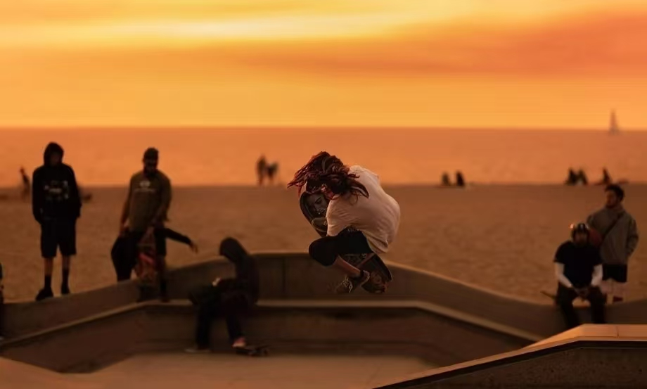

场景化选品体系
区分街式滑板、陆地冲浪板、长板三大板型，匹配刷街代步、道具动作、碗池特技不同需求，不选错板。

STREET // CATEGORY 05 — 街头极限 · 城市滑板分类
The city is your terrain — streets, stairs, bowls.
城市滑板・全品类｜以板为足，征服城市肌理。街式 / 长板 / 陆地冲浪板全套装备，从新手入门到 Pro 动作套装，适配城市刷街、台阶道具、碗池场地。
WHY OROGEN SKATE
STREET / SURFSKATE / LONGBOARD — 按板型选装备，按场景配硬件
区分街式滑板、陆地冲浪板、长板三大板型，匹配刷街代步、道具动作、碗池特技不同需求，不选错板。
高弹性加拿大枫木板面、高强度支架、耐磨配方轮，承受跳跃与落地冲击，不易断裂。
宽松剪裁、耐磨抗撕裂，适配大幅度下蹲跳跃动作，兼顾穿搭审美与运动实用性。
新手入门护具套装到 Pro 高强度防撞护具，保护手腕、手肘、膝盖，降低摔倒受伤风险。
板面、支架、轮子、轴承、砂纸、维修工具全套配件，可单独选购、自由 DIY 组装。
COMPLETE BOARDS & DECKS — CORE
街式双翘 · 陆地冲浪板 · 长板 — 七层枫木压制，板面可单独购买 DIY 组装
街式双翘：城市道具玩家首选，七层枫木压制板面，强回弹耐冲击，适合 Ollie、尖翻、台阶跳跃，原创涂鸦 / 简约几何板面可单独购买；陆地冲浪板：弹簧转向支架，小角度灵活转向，无需蹬地持续滑行，通勤与泵道两相宜；长板：板面更长更稳，减震优秀，长距离刷街、速降、dancing 平花皆可。
HARDWARE & PARTS
砂纸 · 支架 · 轴承 · 轮子 · 维修工具 — 自由组装你的专属滑板
全套硬件采用抗冲击材质，满足不同玩法的改装需求，适配不同体重滑手——从一张砂纸到整套支架轮组，皆可单独选购。
STREET APPAREL
宽松落肩剪裁 · 做旧质感面料 · 加固耐磨 — 入门休闲款 / Pro 专业动作款
重磅耐磨 T 恤、连帽卫衣、工装阔腿长裤与滑板短裤，裤膝加固摔倒摩擦不易破损；低帮耐磨滑板鞋，加厚橡胶鞋头、强抓地大底，砂纸摩擦不易磨破，适合长时间练招。
PROTECTION & SAFETY
护膝 · 护肘 · 护腕护掌 · 头盔 — 新手套装 / Pro 高强度款 分层防护
新手套装：基础防撞海绵护具，性价比高，适合初学练习；Pro 高强度款：硬质外壳 + 高密度缓冲层，抗冲击，适合碗池、大台阶等高风险动作，强力保护关节。另有滑板包、防滑手套等配件。
BUYING GUIDE — 用户刚需
STREET / SURFSKATE / LONGBOARD — 三种板型，三套装备逻辑
想练翻板动作选街式双翘板，搭配硬轮与专业滑板鞋，全套护具上身，道具台台阶随便磕。
街式整板 →不想高强度练动作选陆冲板，弹簧转向小角度灵活过弯，搭配抓地软轮与基础护具，刷街泵道两相宜。
陆冲整板 →长距离巡航、高速滑行选长板，减震软轮稳定可控，速降与平花 dancing 皆宜，头盔必备。
长板整板 →